분석 1카페 게시글은 총 3번의 알고리즘을 탄다
하나의 게시글이 세 단계의 노출 알고리즘을 타는 것으로 추정됩니다. 즉, 글 하나의 공수 대비 상당히 가성비가 좋은 채널이라는 점을 파악했습니다.
1카페 게시판
추천글
추천글
2내 카페
인기글
인기글
3네이버
메인
메인
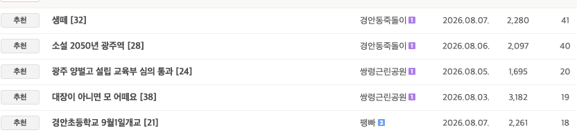
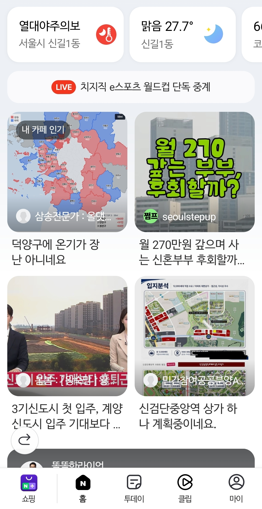
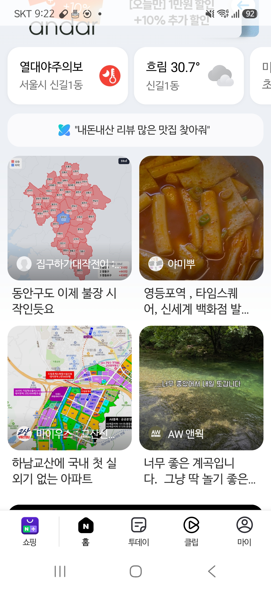
프롭테크운영UNIT · 워크샵 공유자료
프로젝트 「수도권 아파트 주간 가격 변동」 바이럴 운영 결과와, 직접 부딪히며 파악한 네이버 카페 알고리즘 분석을 공유합니다.
107건
바이럴 게시글
295,202+
누적 조회수 105건 갱신 · 2건 이전 집계
40/ 56
글쓰기 권한 확보 카페
~10%
DAU 기여 (GA 기준)
프로젝트명
수도권 아파트 주간 가격 변동
수도권 아파트의 주간 가격 변동 데이터를 콘텐츠로 만들어, 지역별 네이버 카페에 위클리로 배포하는 바이럴 프로젝트입니다.
참여인원 · 총 4명
총 107건의 게시글을 배포했고, 누적 조회수는 295,202회입니다. 네이버 카페 105건과 테스트로 배포한 에펨코리아 부동산 게시판 2건을 포함해, 조회수 많은 순으로 정리했습니다. (조회수: 2026. 9. 21 17:23 기준) 접근 오류가 있는 2건은 이전 조회수를 포함했습니다: 다산카페 909회(9월 16일 13:02), 수원카페 1,459회(9월 16일 14:01).
| # | 카페명 | 게시글 | 등록일 | 조회수 |
|---|---|---|---|---|
| 1 | 부동산 스터디 | 분당은 그냥 말이 필요 없을 정도네요 | 31,322 |
|
| 2 | 부동산 스터디 | 분당 매매 가격 오르는게 클라스가 다르긴 하네요 | 13,677 |
|
| 3 | 부동산 스터디 | 규제 지역 근황 | 11,273 |
|
| 4 | 에펨코리아 (부동산 게시판) | 거긴 좀… 근황 | 9,878 |
|
| 5 | 동탄2신도시 분양 정보 | 동탄의 불장은 끝이 안 보이네요 | 9,226 |
|
| 6 | 아름다운 내집갖기 | 김포도 이제 불장 초입이네요 | 9,021 |
|
| 7 | 아름다운 내집갖기 | 인천 검단(구 서구)에도 이제 상승 온기가 퍼지는 것 같네요 | 8,014 |
|
| 8 | 부동산 스터디 | 규제 지역 근황 | 7,090 |
|
| 9 | 올댓송도 (인천 연수·송도) | 송도에도 온기가 오는 거 같습니다 | 6,556 |
|
| 10 | 아름다운 내집갖기 | 김포도 상승하고 있네요 | 6,449 |
|
| 11 | 렛츠용인 | 수지든 기흥이든 처인구까지... 지금 용인 자체가 상승장 진입한 거 같습니다 | 5,621 |
|
| 12 | 의정부 양주 부동산의 모든것 | 의정부도 불장 초입이네요 | 5,178 |
|
| 13 | 부동산 스터디 | 분당의 상승은 끝이 없네요 | 5,086 |
|
| 14 | 동탄2신도시 분양 정보 | 동탄 온기가 끝나지 않았습니다 | 4,974 |
|
| 15 | 다산신도시 연합카페 (남양주) | 다산도 신고가 행진이군요 | 4,913 |
|
| 16 | 다산신도시 연합카페 (남양주) | 남양주가 뜨겁습니다~~ | 4,910 |
|
| 17 | 광명맘&대디 (광명) | 광명도 불장인가봐요 | 4,867 |
|
| 18 | 안양톡 (안양·의왕·군포·과천) | 동안구도 이제 불장 시작인듯요 | 4,808 |
|
| 19 | 동탄2신도시 분양 정보 | 동탄은 끊임 없이 상승하네요 | 4,537 |
|
| 20 | 동탄2신도시 분양 정보 | 동탄 상승이 아직 끝나지 않았습니다! | 4,330 |
|
| 21 | 다산신도시 연합카페 (남양주) | 다산E편한세상자이 실거래 상승이 장난 아니네요 | 4,232 |
|
| 22 | 아름다운 내집갖기 | 광주에도 드디어 온기가 오네요 | 4,042 |
|
| 23 | 다산신도시 연합카페 (남양주) | 남양주가 3주 연속 뜨겁네요 | 3,916 |
|
| 24 | 다산신도시 연합카페 (남양주) | 남양주에도 온기가 | 3,719 |
|
| 25 | 부동산 스터디 | 규제 지역 근황 | 3,465 |
|
| 26 | 올댓고양 (고양·일산·창릉) | 덕양구 또 오르네요 | 3,424 |
|
| 27 | 오산 부동산 & 세교신도시 | 오산에도 이제 온기가 오네요 | 3,272 |
|
| 28 | 에펨코리아 (부동산 게시판) | 여긴 쫌…에 이은 여긴 꽤… 근황 | 3,197 |
|
| 29 | 올댓고양 (고양·일산·창릉) | 덕양구에 온기가 장난 아니네요 | 3,179 |
|
| 30 | 안양톡 (안양·의왕·군포·과천) | 의왕역 sk뷰 59B 자금 계획 짜고 있는데 | 3,172 |
|
| 31 | 다산신도시 연합카페 (남양주) | 남양주가 2주 연속 뜨겁네요 | 3,161 |
|
| 32 | 안양톡 (안양·의왕·군포·과천) | 의왕 불장 스타트 | 3,070 |
|
| 33 | 다산신도시 연합카페 (남양주) | 다산신안인스빌퍼스트리버도 10억 돌파했네 | 3,048 |
|
| 34 | 오산 부동산 & 세교신도시 | 오산도 상승하고 있네요 | 2,956 |
|
| 35 | 아름다운 내집갖기 | 광주 3주 연속 상승하네요 | 2,874 |
|
| 36 | 안양톡 (안양·의왕·군포·과천) | 만안구는 계속 상승하네요 | 2,789 |
|
| 37 | 수도권의 중심 “수원” | 장안구 불장 진입 | 2,598 |
|
| 38 | 안양톡 (안양·의왕·군포·과천) | 동안구는 떨어질 기미가 안 보이네요 | 2,575 |
|
| 39 | 광명맘&대디 (광명) | 광명은 계속해서 오르네요 | 2,566 |
|
| 40 | 아름다운 내집갖기 | 광주도 우상향 하고 있습니다! | 2,561 |
|
| 41 | 안양톡 (안양·의왕·군포·과천) | 만안구 아파트 매매 가격 상승이 심상치가 않네요 | 2,540 |
|
| 42 | 수도권의 중심 “수원” | 권선구도 불장! | 2,367 |
|
| 43 | 수도권의 중심 “수원” | 요즘 영통구 분위기가 심상치 않네요 | 2,351 |
|
| 44 | 안양톡 (안양·의왕·군포·과천) | 동안구도 계속 오르네요 | 2,334 |
|
| 45 | 다산신도시 연합카페 (남양주) | 남양주 4주 연속 상승했네요? | 2,208 |
|
| 46 | 수도권의 중심 “수원” | 권선구에도 온기가 오기 시작했네요 | 1,983 |
|
| 47 | 올댓고양 (고양·일산·창릉) | 덕양구는 꾸준히 오르고 있습니다! | 1,961 |
|
| 48 | 아름다운 내집갖기 | 광주 4주 연속 상승 | 1,894 |
|
| 49 | 다산신도시 연합카페 (남양주) | 별내모아미래도 8억에 신고가에 경기도 상승률 3등 | 1,856 |
|
| 50 | 동사모 (동탄사랑모임) | 동탄의 불장은 끝이 안 보이네요 | 1,648 |
|
| 51 | 동탄2신도시 분양 정보 | 동탄반도유보라아이비파크2차 한번에 1억이 올랐네 | 1,553 |
|
| 52 | 올댓고양 (고양·일산·창릉) | 덕양구 상승세가 이번주도 심상치 않네요 | 1,543 |
|
| 53 | 수도권의 중심 “수원” | 장안구도 계속해서 상승하고 있네요 | 1,472 |
|
| 54 | 안양톡 (안양·의왕·군포·과천) | 만안구 3주 연속 상승이네요 | 1,462 |
|
| 55 | 수도권의 중심 “수원” | 하늘채더퍼스트 25평인데 한번에 1억 넘게 올랐네요? | 1,459갱신 불가 · 이전 집계 |
|
| 56 | 수도권의 중심 “수원” | 권선구도 계속 오르고 있네요 | 1,404 |
|
| 57 | 안양톡 (안양·의왕·군포·과천) | 이제 군포에도 따뜻한 온기가 오네요 | 1,381 |
|
| 58 | 수도권의 중심 “수원” | 오늘은 영통구 신고가의 날인가요? | 1,371 |
|
| 59 | 동사모 (동탄사랑모임) | 동탄은 끊임 없이 상승하네요 | 1,275 |
|
| 60 | 동탄1 신도시카페 | 솔빛마을신도브레뉴 한번에 1억 올랐네요 | 1,227 |
|
| 61 | 광명맘&대디 (광명) | 광명의 상승은 끝이 없네요 | 1,209 |
|
| 62 | 수도권의 중심 “수원” | 그대가 프리미어랑 영아캐 한번에 1억이 넘게 올랐네요? | 1,179 |
|
| 63 | 수도권의 중심 “수원” | 팔달구는 선방을 하는군요 | 1,142 |
|
| 64 | 렛츠용인 | 수지구, 기흥구 불장 | 1,125 |
|
| 65 | 병점권부동산[병발모] | 요즘 병점구가 심상치가 않네요 | 1,109 |
|
| 66 | 수도권의 중심 “수원” | 장안구도 연속적으로 상승하고 있군요 | 1,101 |
|
| 67 | 올댓고양 (고양·일산·창릉) | 덕양구는 완만하게 상승하고 있네요 | 1,078 |
|
| 68 | 수도권의 중심 “수원” | 영통구 상승 진입 | 1,074 |
|
| 69 | 동탄2신도시 분양 정보 | 한화포레나동탄호수 경기 상승률 3등 | 1,070 |
|
| 70 | 부동산 스터디 | 세금 규제 속 분당은 선방하네요 | 1,022 |
|
| 71 | 수도권의 중심 “수원” | 팔달구도 계속해서 오르고 있네요 | 1,015 |
|
| 72 | 동탄1 신도시카페 | 동탄은 끊임 없이 상승하네요 | 1,010 |
|
| 73 | 안양톡 (안양·의왕·군포·과천) | 동안구는 2주 연속 상승이네요 | 984 |
|
| 74 | 안양톡 (안양·의왕·군포·과천) | 의왕은 선방하군요 | 952 |
|
| 75 | 내집장만 아카데미 | 아파트 옵션 질문입니다ㅠㅠ | 919 |
|
| 76 | 올댓고양 (고양·일산·창릉) | 대곡역두산위브 24평도 7억 넘었네요 | 916 |
|
| 77 | 다산신도시 연합카페 (남양주) | 유승한내들센트럴 한번에 1억이 올랐네요? | 909갱신 불가 · 이전 집계 |
|
| 78 | 동사모 (동탄사랑모임) | 동탄은 선방하네요 | 885 |
|
| 79 | 지정타공식소통카페 | 과천도 상승장에 진입했습니다! | 870 |
|
| 80 | 동탄2신도시 분양 정보 | 엘크루28단지 한번에 1억, 센트럴시티 한번에 8천이 올랐군요 | 820 |
|
| 81 | 부동산 스터디 | 분당 장안타운건영2차 전국 전고점 돌파 1등 | 801 |
|
| 82 | 과천사랑 | 오늘자 과천푸르지오벨라르테 실거래가 갱신 경기도 3등 | 794 |
|
| 83 | 아름다운 내집갖기 | 소사구도 이제 상승장에 진입했네요 | 754 |
|
| 84 | 렛츠용인 | 수지는 말이 필요 없을 정도로 상승하고 있네요 | 744 |
|
| 85 | 지정타공식소통카페 | 과천도 꾸준히 우상향 하고 있습니다 | 729 |
|
| 86 | 올댓고양 (고양·일산·창릉) | 덕양구 2주 연속 상승입니다 | 713 |
|
| 87 | 부동산 스터디 | 규제 지역 근황 | 683 |
|
| 88 | 부동산 스터디 | 오늘의 전국 가격상승 대장 강변그대가리버뷰/ 전국 실거래가 (26.08.20) | 673 |
|
| 89 | 렛츠용인 | 수지구 상승이 심상치 않네요 | 647 |
|
| 90 | 렛츠용인 | 기흥구 상승하고 있습니다 | 642 |
|
| 91 | 렛츠용인 | 수지의 상승은 끝이 없습니다! | 594 |
|
| 92 | 과천사랑 | 과천도 꾸준히 우상향 하고 있습니다 | 550 |
|
| 93 | 동탄2신도시 분양 정보 | 오늘의 화성 가격상승 및 상승률 대장 힐스테이트동탄역 2차 / 경기도 화성시 실거래가 (26.08.20) | 549 |
|
| 94 | 동사모 (동탄사랑모임) | 솔빛마을신도브레뉴 한번에 1억 올랐네요 | 544 |
|
| 95 | 부동산 스터디 | 영통구 오늘 장난이 아니네요 | 535 |
|
| 96 | 부동산 스터디 | 비규제 지역 근황 | 501 |
|
| 97 | 렛츠용인 | 기흥 삼거마을삼성래미안 한번에 4억이 올랐네요 | 478 |
|
| 98 | 동탄1 신도시카페 | 동탄은 선방하네요 | 467 |
|
| 99 | 부동산 스터디 | 잠실더샵루벤, 가락상아 신고가 상승 전국 1,2등을했네요 | 421 |
|
| 100 | 렛츠용인 | 수지는 선방을 하네요 | 382 |
|
| 101 | 동탄2신도시 분양 정보 | 오늘의 화성 가격상승 대장 숲속마을모아미래도1단지/ 전국 실거래가 (26.08.25) | 379 |
|
| 102 | 실전 분양권투자 지원센터 | 규제 지역 가격 상승이 장난 아니네요 | 335 |
|
| 103 | 내집장만 아카데미 | 규제 지역은 지금 엄청 불장이네요 | 266 |
|
| 104 | 아름다운 내집갖기 | 원미구는 선방을 하군요 | 240 |
|
| 105 | 병점권부동산[병발모] | 병점구만 선방을 하네요 | 220 |
|
| 106 | 내집장만 아카데미 | 병점구가 리드하네요 | 178 |
|
| 107 | 강원도 맘카페 | 리버뷰 아이파크 84B 옵션 훈수 부탁드려요 | 159 |
작성자가 직접 배포한 글 외에도, 일반 유저들이 콘텐츠를 자발적으로 공유하고 있습니다. 아래는 일반 유저 공유와 관련 언론 보도 24건이며, 위의 바이럴 게시글 수와 누적 조회수 집계에는 포함하지 않았습니다. (조회수: 2026. 9. 21 17:23 기준)
| # | 공유 채널 | 게시글 | 등록일 | 조회수 |
|---|---|---|---|---|
| 1 | 올댓고양 (고양·일산·창릉) | 고양시 전역 상승. 일산까지 상승.거래량 증가 | 6,299 | |
| 2 | 부동산 스터디 | 2027년 자산없는 무주택자 분들 어쩔거임.... 아니 진심, 월세는 현실임, 무조건 휘발성으로 내야함 | 47,825 | |
| 3 | 에펨코리아 (부동산 게시판) | 서울 밖 '아.. 거긴 좀...' 하는 지역까지 퍼지는 온기 | 12,255 | |
| 4 | 수도권의 중심 “수원” | 팔달 영통 규제지역 1위 | 1,115 | |
| 5 | 에펨코리아 (부동산 게시판) | 거긴좀 근황 | 1,709 | |
| 6 | 보배드림 (신유머/이슈/움짤) | 주식 시장보다 더 걷잡을 수 없는 시장 ~~ | 3,066 | |
| 7 | Threads (@just_do_auction) | 분당선도지구 1차 4곳이 재건축되면: | 확인 불가 | 확인 불가 |
| 8 | 에펨코리아 (주식 게시판) | 공무원 떡락 시점 | 708 | |
| 9 | 개드립 (정치 사회 판) | 돈복사중인 불타는 포도송이 | 확인 불가 | 159 |
| 10 | 네이버 블로그 (해피씨쀼) | 시드 1~2억 애매한 신혼부부 내집마련, 규제지역 소형 아파트라도 잡아야 할까? (7월 마지막주 KB부동산 동향) | 확인 불가 | |
| 11 | 호갱노노 (동탄역센트럴상록) | 동탄구가 다시 제일 높은 상승율 찍었네요.. | 292 | |
| 12 | 호갱노노 (판교풍경채어바니티5단지) | 분당이 지속적으로 오르네요!!!!! | 32 | |
| 13 | 보배드림 (유머게시판) | 어우야 ~ 여긴 주식시장보다 더 하네 ~~ | 135 | |
| 14 | 호갱노노 (e편한세상인덕원더퍼스트) | 의왕시 상승률이 7월 마지막주에 전주 대비 상승률(국평기준, 부동산원자료)이 동안구(평촌), 기흥구, 분당구, 중원구, 수지구 등 앞지르기 시작했어요. | 293 | |
| 15 | 호갱노노 (초지역메이저타운푸르지오메트로단지) | 안산시 단원구 상승 기세가 대단하네요.. | 72 | |
| 16 | 호갱노노 (시흥센트럴푸르지오) | 이제 인천도 상승시작 하나 봅니다 | 42 | |
| 17 | Threads (@chloe_insight) | 요즘 구리,다산을 집중해서 보고있다. | 확인 불가 | 확인 불가 |
| 18 | 에펨코리아 (유머/움짤/이슈) | 부동산 토허제 근황 | 3,081 | |
| 19 | 에펨코리아 (주식 게시판) | 개 ㅈ같네 영끌해서 집샀는데 집값이 매일 떨어진다. | 311 | |
| 20 | Threads (@gwangboom) | 6억이하 아파트가 많은 광주시도 비규제지역 국평 주간상승률 4위! | 확인 불가 | 확인 불가 |
| 21 | 블라인드 (부동산) | 부동산 때문에 지지율 떨어지는게 이해가 안돼??? 왜 안돼니? | 772 | |
| 22 | Threads (@insight_roy) | 내일 서울 정비구역 변동성 주의🚨 | 확인 불가 | 확인 불가 |
| 23 | 네이트 뉴스 (조선비즈 · 언론 보도) | 규제 동탄도, 비규제 병점도…59·84㎡ 집값 상승률 1위 | 확인 불가 | |
| 24 | 블라인드 (부동산) | 온 우주 기운이 분당판교로 모이네 | 1,497 |
등록일·조회수가 공개 화면에서 확인되지 않는 경우 ‘확인 불가’로 표시했습니다. 제목이 없는 글은 본문 첫 문장을 표시했으며, 언론 보도는 공유 채널에 별도로 표기했습니다.
카페 가입부터 글을 작성할 수 있는 등업까지 상당한 시간이 소요됩니다. 많은 카페에 가입하고 글쓰기 권한을 확보하는 것이 관건인데, 약 1~2개월을 들여 56개 카페 중 40개 카페의 등업을 완료했고, 지속적으로 추가 확보 중입니다.
하나의 게시글이 세 단계의 노출 알고리즘을 타는 것으로 추정됩니다. 즉, 글 하나의 공수 대비 상당히 가성비가 좋은 채널이라는 점을 파악했습니다.



인기글 게시판이 있는 카페를 선정합니다. 인기글 게시판이 있는 곳과 없는 곳은 조회수 차이가 심하고, 게시글에 대한 집중도 자체가 다르다는 것을 파악했습니다.
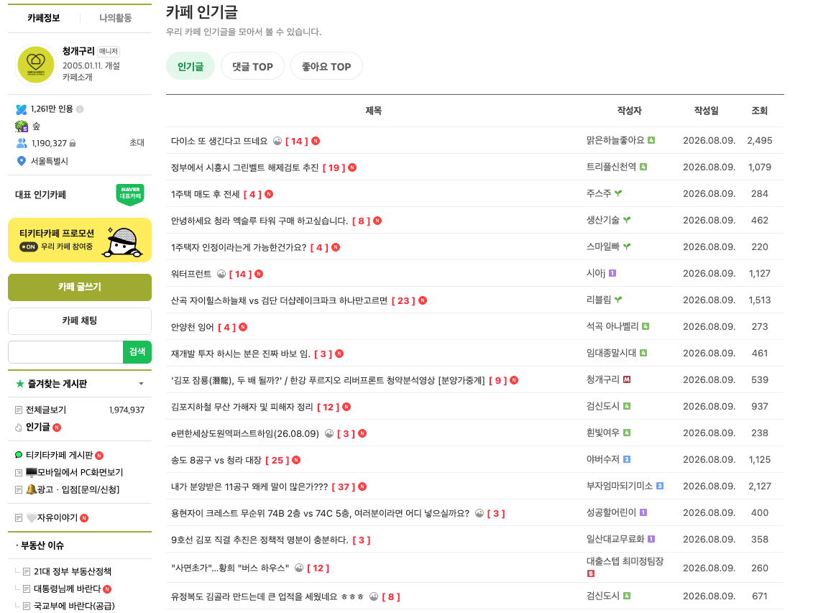
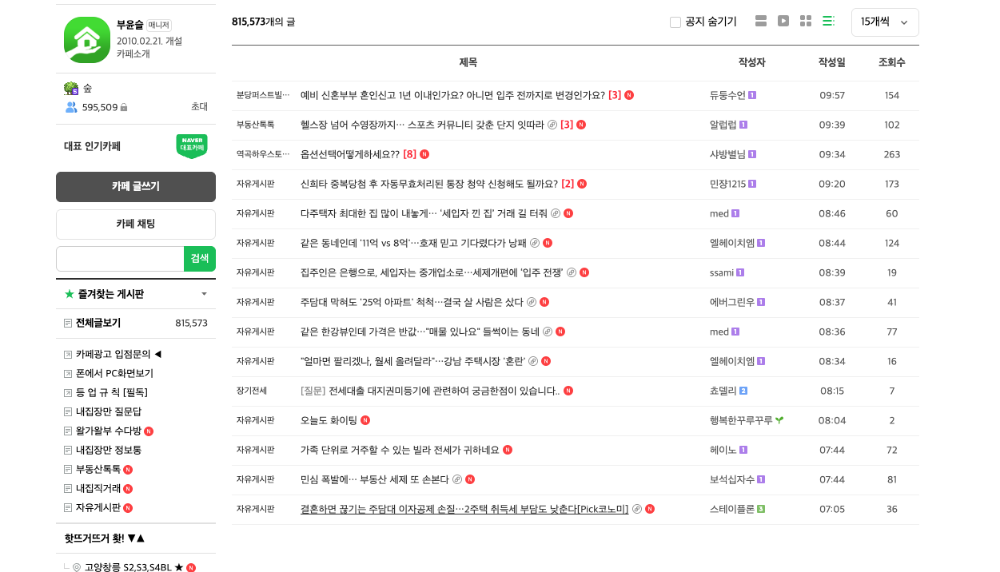
제외 기준 — 조회수가 낮아도 인기글에 가는 카페, 또는 광고가 인기글을 차지하는 카페는 제외합니다. 공수 대비 효과가 적고, 광고만 있는 케이스는 매크로 때문에 정상 글이 인기글에 가지 못하는 것으로 추정됩니다.
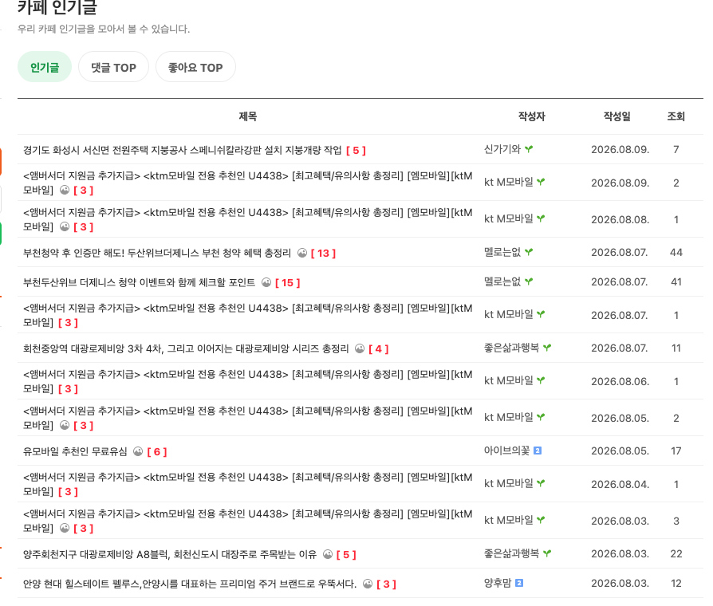
게시글을 카페 멤버만 보게 하는 것보다 전체 공개로 설정해야 조회수가 더 높다는 것을 파악했습니다. 총 4개의 게시물로 테스트를 진행했습니다.
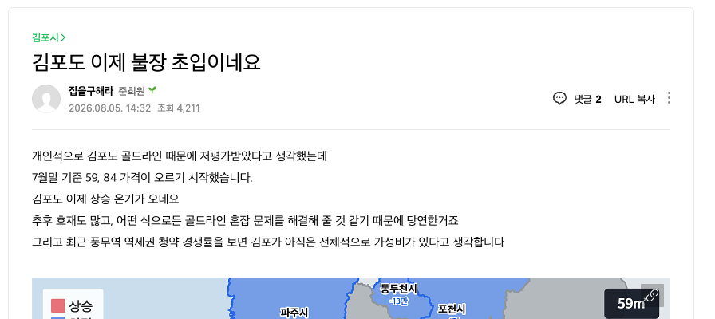
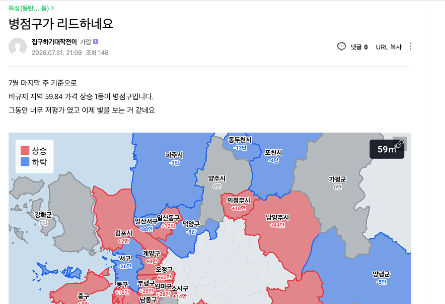
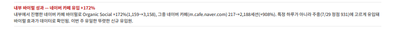
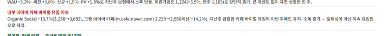
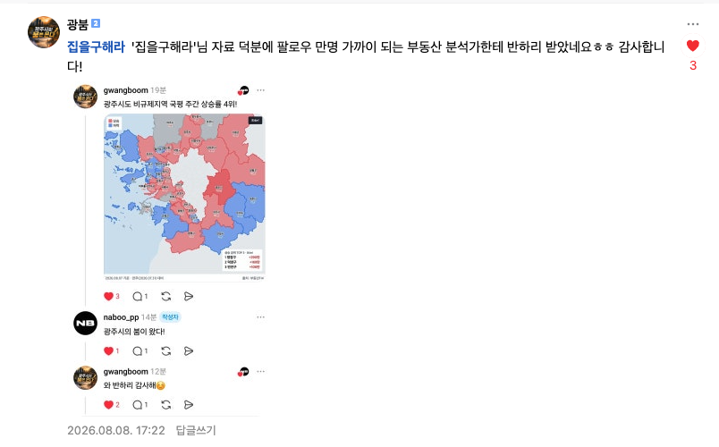
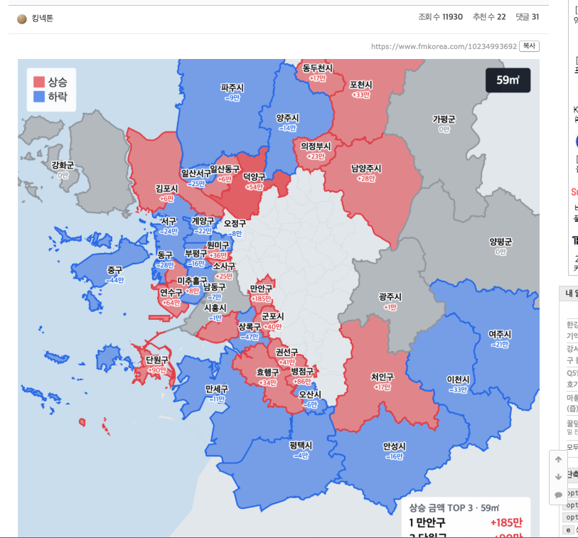
실거래를 갱신한 단지를 데일리로 각 지역 카페에 바이럴하는 다음 아이템입니다.
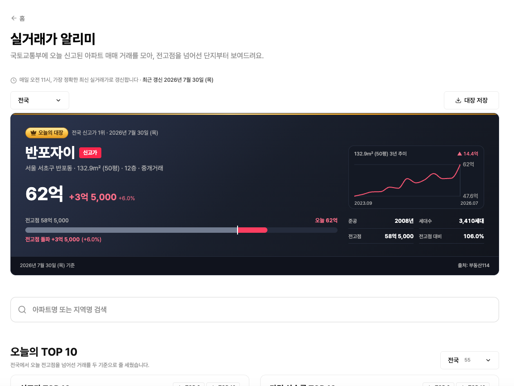
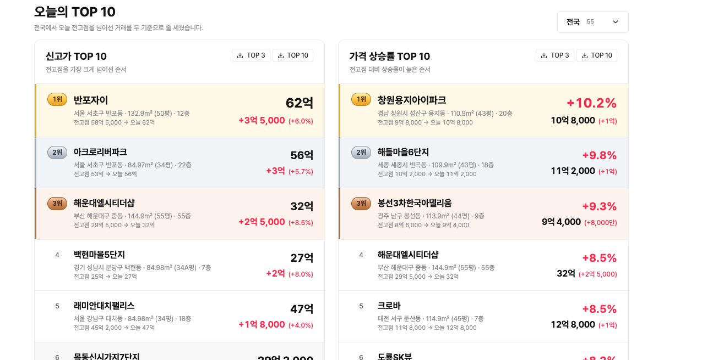